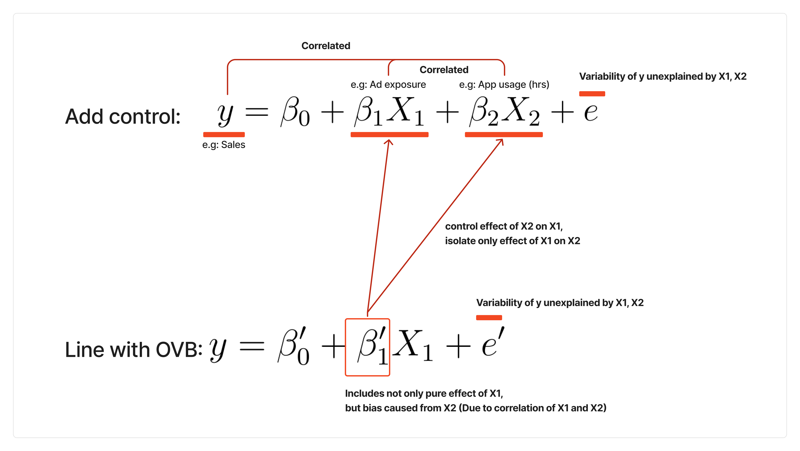

Using Control Variables
category_specifier : "Causal Inference"
Reference Docs: Frisch Waugh Theorem | AB Testing Framework With Regression | Omitted Variable Bias | Standard Error | Linear Regression and Coefficient
Motivation

In randomized AB test
💡What should we do if, significance is low for A/B test?
- Adding control variable is one of three ways to help improving precision of AB Testing Framework With Regression (Lowering SE of regression coefficient estimate \(\beta\))
- Choosing 50:50 for probability of control, treatment to maximize \(Var(X)\)
- Choosing right sample size to lower Standard Error
- Adding control variables in AB test
In observational data
- If you don’t, or can’t run random experiment, you cannot make causal interpretation in observational data
- How can we make the best causal claim from observational data, if you cannot run experiment?
- Adding control variables can isolate random variation, and remove ‘non random’ part of each variable. This can control some extent of engogeneity.
- Adding control variable can help controlling Omitted Variable Bias
Framework
If you have run random A/B test
Settings
- Consider univariate regression for a A/B test
\[ Target = \beta_0 + \beta_1 * treatment + e \]
- Then, consider multivariate regression for the same A/B test.
\[ Target = \gamma_0 + \gamma_1 * treatment + \gamma_2X_2 + \gamma_3X_3 + ... + u \]
- \(Target\) could be target variable as sales, while \(X_2, X_3 ...\) could be all other available variables (data we have: e.g. )
Takeaways
- Here, \(Var(\beta_1) \geq Var(\gamma_1)\) always holds, which means adding up control variable can reduce error (improve precision) of the A/B test coefficients.
- CAUTION: For randomized AB test, we are not adding control variables for Omitted Variable Bias - there is no OVB if we have randomized AB test.
If you only have observational data
Settings
\[ y =\beta_0 + \beta_1 * treatment+ e \]
- You don’t have AB test results, but only observational data which is likely to have Omitted Variable Bias), because assignment of treatment is not random for each of the variables.
- Here, \(\beta_1\) represents effect of the treatment, while \(e\) contains all the variation not explained by the treatment.
\[ y =\beta_0' + \beta_1' * treatment + \beta_2X_2 +e' \]
- By adding omitted variable \(X_2\) as control, \(\beta_1'\) will be less biased,
removing bias caused by relationship between treatment and \(X_2.\)
- Since \(OVB = \beta_2 * \frac{Cov(treatment, X_2)}{Var(X_2)}\) (Omitted Variable Bias)), if \(Cov(treatment, X_2)\) is not 0, \(\beta_1'\) will change.
- Since treatment is not randomly assigned regarding \(X_2\), \(Cov(treatment, X_2)\) is not likely to be 0
Takeaways
- \(\tilde{X_1}\) represents the portion of \(X_1\)(treatment) that is not correlated with other variables.
- This allows us to estimate the true random treatment effect more accurately.
- By adding a control variable, we isolate the random effect of \(X_1\)removing confounding influences.
- Specifically, controlling for \(X_2\) ensures that the variation in \(X_1\) used for estimation is uncorrelated with \(X_2\) , leading to an unbiased estimate of the treatment effect.